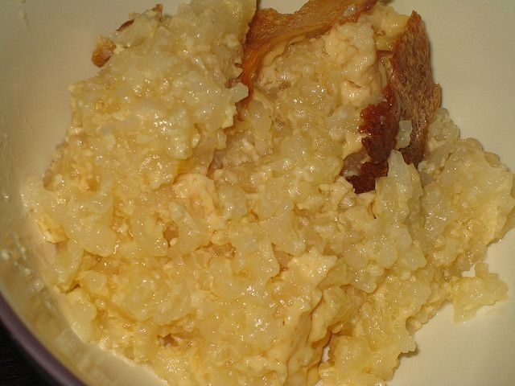

Rice Pudding

Description
This recipe is from the Boston Cooking-School Book,
published in 1898.
Unlike the rice puddings that most Americans know, this rice pudding
is baked in an oven, which gives it an exquisite flavor.
Ingredients
- 4 cups milk
- ⅓ cup rice
- ½ teaspoon salt
- Grated rind ½ lemon
Steps
- Wash rice.
- Mix ingredients.
- Pour into a buttered dish.
- Bake three hours in very slow oven, stirring three times during
first hour of baking to prevent rice from settling.